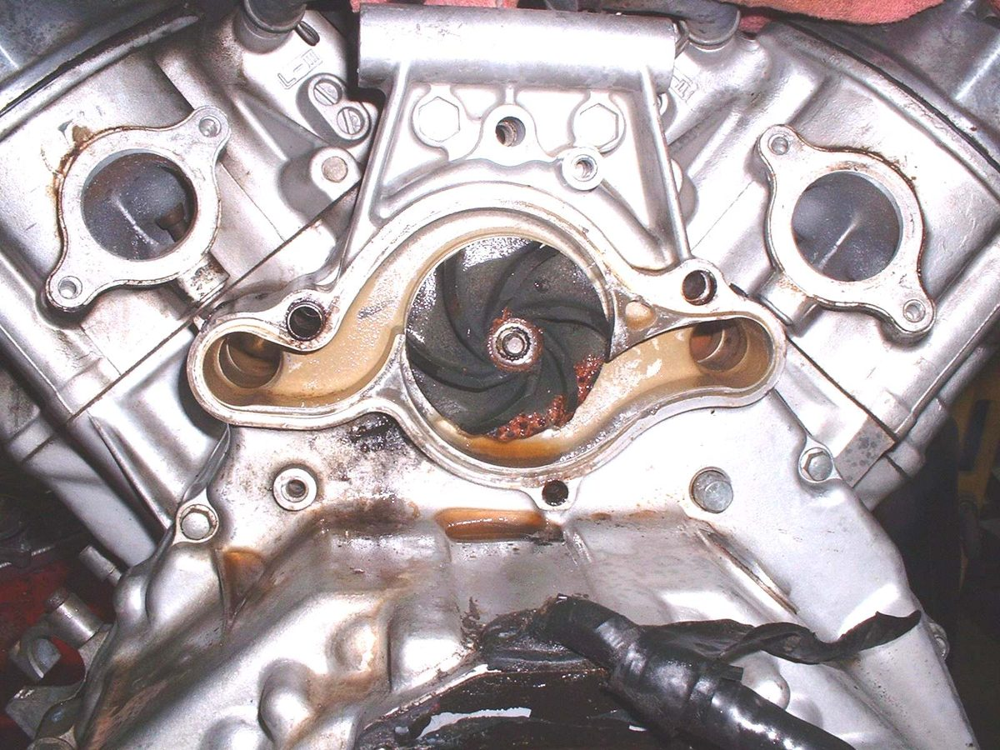
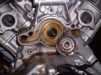

The water pump moves coolant around the engine and radiator. A small impeller on a shaft turns inside a cover and pushes the coolant. If the impeller is worn, corroded or loose, flow drops and the engine overheats, even when the level, thermostat and fan are good. This page covers the checks and what to look for when the pump cover is off.
Safety
- Work on a cold engine only. Hot coolant scalds.
- Coolant is poisonous. Drain it into a pan and keep it from children and animals.
- Do not use water in place of coolant in cold climates. Frozen coolant can crack the engine.
First checks (no parts removed)
- Coolant level in the radiator and reservoir: Check and top up coolant.
- Thermostat: Test a coolant thermostat in hot water.
- Fan: Test the radiator fan and its switch.
- Leaks at the pump drain hole or the case: Find a coolant leak.
Check for flow
- With the engine cold, take off the radiator pressure cap (not the reservoir cap).
- Start the engine. With the thermostat open, coolant should be seen moving in the filler neck. With the thermostat in place, let the engine warm first.
- No flow while the engine is warm suggests a faulty pump or a blocked system.
- Stop the engine and refit the cap.
Inspect the impeller
- Drain the coolant as the manual describes.
- Remove the pump cover. The impeller is on the end of the shaft behind it.
- Look for worn or eaten fins, cracks, loose mounting and corrosion. Rust and eaten metal show that the coolant was old or the wrong type.
- Turn the shaft by hand. It should spin smoothly. Roughness or play means a worn bearing or seal.
- Look for coolant stains around the shaft. A leak here means the pump seal is worn.
- Replace worn parts. Fit a new gasket or seal ring and tighten to the manual's values.
- Refill with the right coolant and bleed air: Replace the coolant.
Care
- Use motorcycle coolant or one without silicates for an aluminium engine. Silicates can wear a pump faster.
- Use distilled water if you can. It leaves fewer mineral deposits.
- Change the coolant at the interval in your bike's manual.
Check your work
- No leaks at the cover, hoses or pump drain.
- Temperature rises to normal and holds.
- The fan comes on when it should.
When to go to a workshop
- The impeller is loose on its shaft, or the shaft has play.
- Oil appears in the coolant, or coolant in the oil. The pump seal or head gasket may be at fault.
- You cannot reach the pump without splitting the engine.